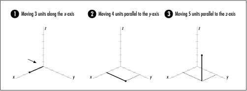
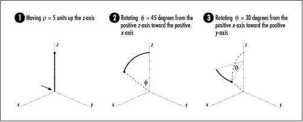
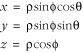
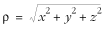
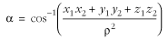
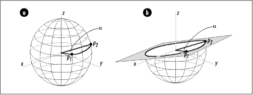
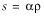

17.7 Description of Arc Length on
Spherical Surfaces
Many problems require computing the distance between two points. When
we are interested in the distance between points along a
straight line, we apply the well-known distance formula
derived from the Pythagorean theorem. However, if we are
interested in the distance between points along a curved
surface, the problem becomes more difficult. Fortunately,
computing the minimum distance, or arc
length, between two points on a spherical surface is a
special case that is relatively simple. To begin, let's look
at two different coordinate systems, rectilinear coordinates and spherical coordinates.
17.7.1 Rectilinear and Spherical
Coordinates
The rectilinear coordinate system is the
coordinate system that is most familiar to us. In rectilinear
coordinates, a point's location is specified using three
values, x, y, z,
which are its positions along the x-axis, y-axis, and z-axis. Referring to Figure
17.5, the z-axis is
positive going upward. Standing at the arrow looking forward,
the x-axis is positive to the
right, and the y-axis is
positive straight ahead. From this vantage point, the positive
directions for x and y look the same as in two dimensions.
Thus, to locate (3, 4, 5), for example, we move three units to
the right along the x-axis,
four units ahead parallel to the y-axis, and five units up parallel to
the z-axis (see Figure
17.5).

In spherical coordinates, a point's
location is specified in terms of a distance r (rho) and
two angles, (theta) and f (phi):
r is
the distance along an imaginary line from the origin to the
point (a radius), is the angle
the point forms from the positive x-axis toward the positive y-axis, and f is the
angle the point forms from the positive z-axis heading toward the positive
x-axis. To locate (5, 30, 45),
for example, we move five units up the z-axis, sweep 45 degrees from the
positive z-axis toward the
positive x-axis, and spin 30
degrees from the positive x-axis toward the positive y-axis (see Figure
17.6). (Notice that it is easier to visualize f before
even though precedes f in the
triple.)

17.7.2 Converting Between
Coordinate Systems
When speaking about
an arc on a spherical surface, it is often convenient to have
its endpoints specified in spherical coordinates. Therefore,
the algorithm presented here assumes this representation to
begin with. However, to compute an arc's length, we will need
its endpoints in rectilinear coordinates. Consequently, the
first step is to convert the points p1 = (r, 1, f1) and p2 = (r, 2, f2) to the rectilinear
equivalents p1 =
(x1, y1, z1) and p2 = (x2, y2, z2). To do this, we start
with the following equations. Of course, the locations of the
points do not change, only their representations.

Another relationship between r and the
rectilinear coordinates x,
y, and z is:

This formula calculates the distance from a
point to the origin in three dimensions.
17.7.3 Computing the Length of an
Arc
Now we are ready to
compute the length of the arc between p1 and p 2 on the sphere. First,
we picture two imaginary lines extending from the center of
the sphere to each of the points (see Figure
17.7a) and calculate a, the angle between them. To do
this, we use the formula:

where cos -1 is the inverse cosine
of the argument in parentheses. Think of an inverse cosine
this way: the cosine of what angle gives us the value of the
argument in parentheses? The expression in the numerator of
the argument comes from treating the imaginary line segments
from the center of the sphere to p1 and p 2 as vectors U and V (see the related topics at the end
of the chapter) and computing the dot product U V.

The lines that form a lie in a
plane that slices across the sphere. The importance of a is that
where the sphere and this plane intersect, a circle is
projected onto the plane with the same radius as the sphere
(see Figure
17.7b). Since the arc between points p1 and p 2 lies along a section
of this circle, a helps to determine how much of the
circle's perimeter the arc covers. This is determined from the
percentage a /2,
since there are 2 radians in a
circle. Using this and the circumference of the circle, 2r, we see
that the length s of the arc
between p1 and p2 is (a/2)(2r), which simplifies to the equation
that follows. This is the equation that is used in the
implementation presented later:
 |